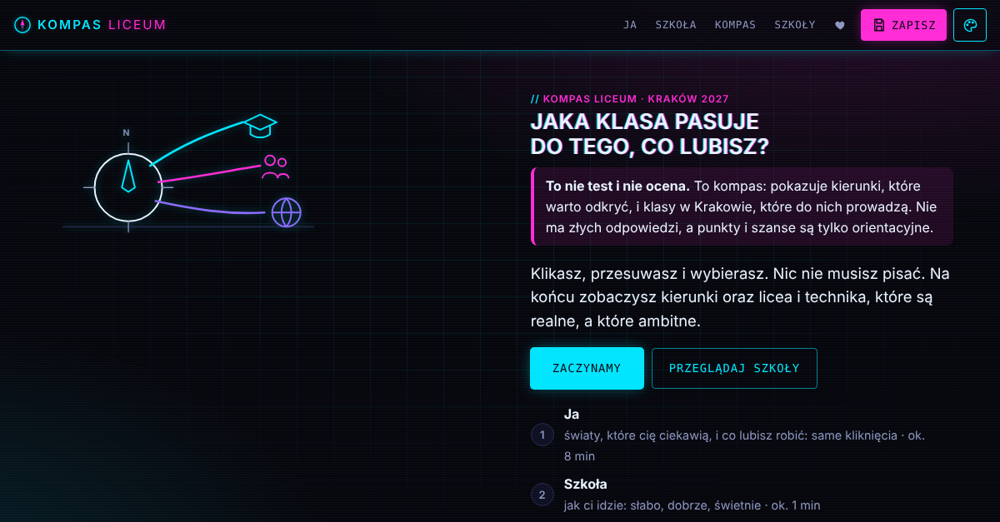
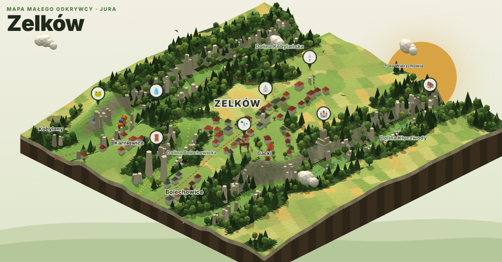
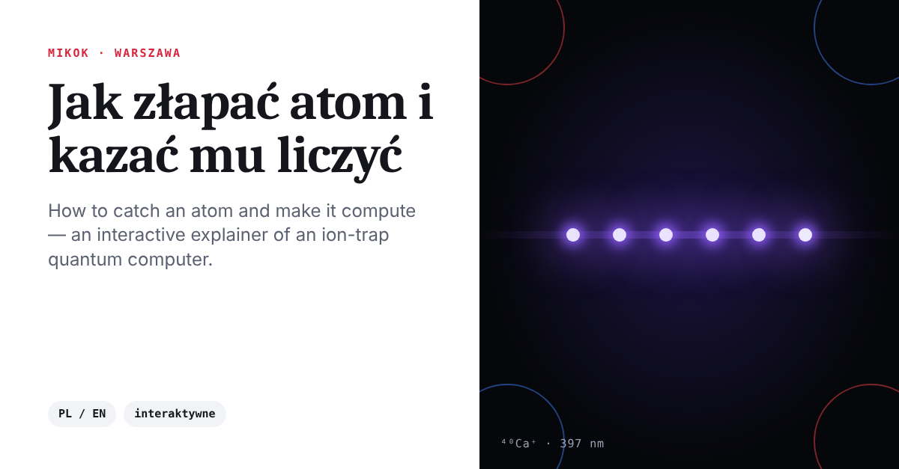
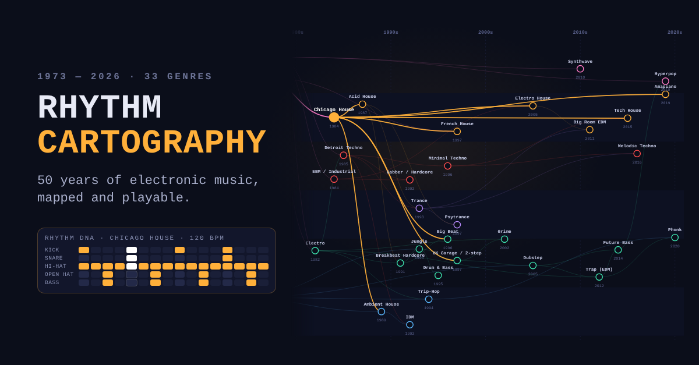
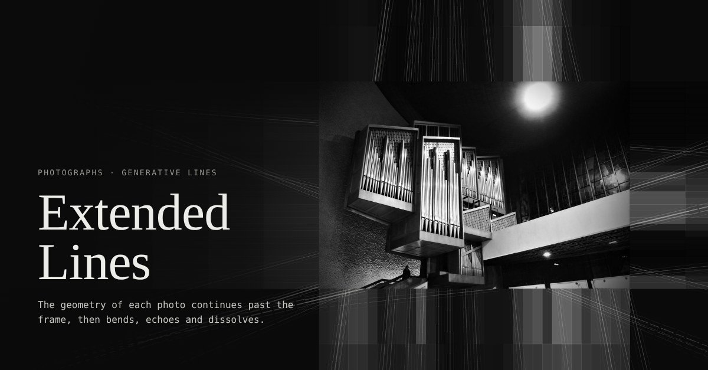

Kompas Liceum
For 8th graders choosing a high school in Kraków, to go through together with a parent. Taps and sliders instead of typing lead to profiles on a compass, then to matching classes and schools on a map. It starts a conversation rather than making the decision, and nothing about the kid leaves the browser. Polish.
Open the demo
Odkryj Zelków
A playful isometric 3D map of Zelków on the Kraków Jura, built from real OpenStreetMap and elevation data. Kids pick an activity (play, bike, hike, climb, views, caves, run), tap pins, do small outdoor tasks and collect 8 stars, while Lisek Zelek the fox walks the red trail and bus 248 drives to Kraków. Day and night modes. In Polish.
Open the demo
How to Catch an Atom
A scrolling explainer of a quantum computer made of single calcium atoms, with Poland's MIKOK project as the example. Play with the lasers to write, read and reset a qubit, run a Bell circuit, and see how jobs reach the machine securely, including QKD. Polish and English.
Open the demo
Rhythm Cartography
An interactive map of 33 electronic music genres, from the 1970s to today. Every genre plays its own rhythm, instrument and melody, live in your browser. You can download any groove as MIDI.
Open the demo
Extended Lines
A small exhibition of black and white photographs. A line detector finds the geometry in each picture, and the page carries it on past the frame: lines extend, bend, echo and slowly fall apart into dots. One dial goes from plain photo to full abstraction.
Open the demo